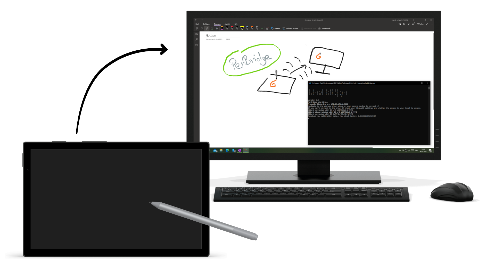

PenBridge
v0.3.1
PenBridge is an Application you can use to use any pen enabled device as a wireless digitizer for your Windows Device.
This means, you can use your pen enabled device, for example a Surface Tablet, an iPad, a Chuwi Tablet
as a drawing tablet for your PC!

Features 🧪
- Lagless pen input transfer
- Pressure sensitivity support
- Tilt support
- Eraser and secondary button support
- Lightweight and installation only necessary on receiving device
Usage 📑
- Install the Application on your main device using the Button below
- Launch PenBridge
- Connect using the browser on your tablet using the shown IP Adress
- 👩🎨
Requirements 🏗
- Stable network connection between devices
- Windows > 1809 on receiving device
- A recent browser on the sending device
- Obviously a pen for the sending device :D
Troubleshooting 🔧
-
OneNote (App) doesn't recognize pen pressure
Reinstall OneNote to fix this issue.
-
My eraser does not work in Software x
Some Software don't recognize the sent pen correctly
as flipped and therefore do not enable the eraser correctly. I'm still searching for a solution for
that issue.
-
Anything else?
Feel free to leave me a message at penbridge@nailuj.net!
Changelog ⏲
-
v0.3.1
Improve User Experience by updating explanations
-
v0.3.0
Update App Icons
-
v0.2.0
Added Tilt support
Fixed some issues
Made drawing page on sending device dark to save battery
-
v0.1.0
Initial Release